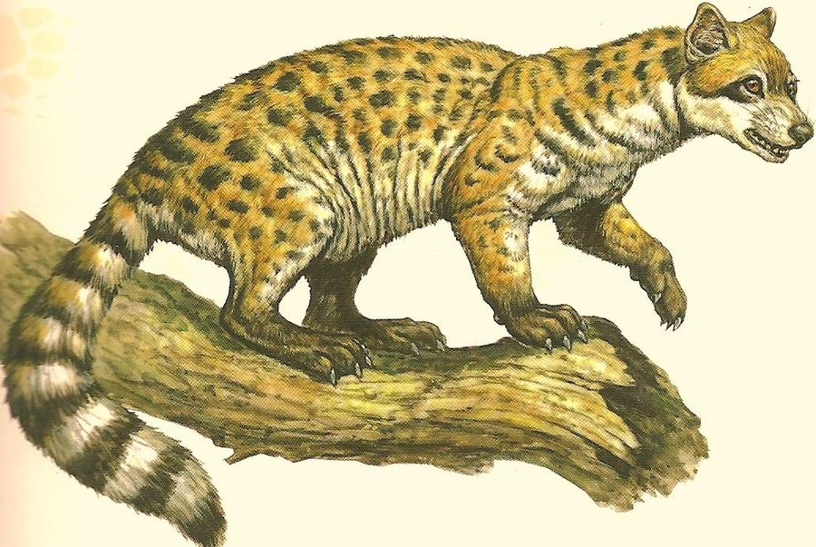
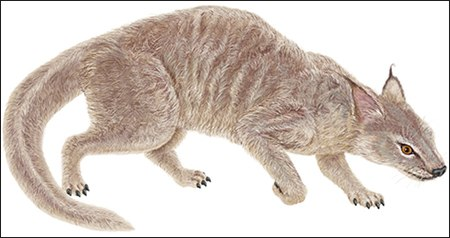

Animals of the Ursidae family:
- Miacids

- The miacids were primitive carnivores which lived during the Paleocene and Eocene Epoch about 65—33 million years ago.
Miacids existed for approximately 32 million years.
Miacids are thought to have evolved into today's modern carnivorous mammals of the order Carnivora.
They were small marten-like carnivores with long, little bodies and long tails.
Some species were arboreal while others lived on the ground.
They probably fed on invertebrates, lizards, birds, and smaller mammals like shrews and opossums.
Their teeth and skulls show that the miacids were less developed than the modern carnivores.
They had Carnivora type carnassials but lacked fully ossified auditory bullae (rounded protrusions).
The miacids are divided into two groups: the miacines with a full complement of molars and the viverravines with a reduced number of molars and more specialized carnassials.
- Miacidae

- Traditionally conceived is a monophyletic; it is not a paraphyletic array of steam taxa.
Traditionally, the Miacidae and the Viverravide had been classified in a third, extinct paraphyletic super family, the Miacoida form which the direct ancestors of both Carnivora and Creodonta were thought to arisen.
Today, Carnivora and Miacoidea are grouped together in the crown-clade Carnivoramorpha, and the Miacoidea are regarded as basal carnivoramorphs.
Some species of the genus Miacis evolved into modern day carnivores of the Order Carnivora, but only the species Miacis cognitus is a true carnivoran.
Thus, Miacis may have given rise to all modern Carnivora.
- Arctoidea
-
A superfamily of extinct and extant mostly carnivorous mammals which include the extinct group Hemicyonidae (dog-bears), and extant groups Musteloidea (weasels), Nothocyon, Pinnipedia (seals, sea lions), and Ursidae (bears), found in all continents from the Eocene, 46 Ma ago, to the present, approximately 46 million years.
- Canoidea "dog-like"

- a suborder within the order Carnivora.
They typically possess a long snout and non-retractile claws (in contrast to the cat-like carnivores, the Feliformia).
The Pinnipedia (seals, sea lions and walruses) evolved from caniform ancestors and are accordingly assigned to this group.
Most members of this group have non-retractile claws (the fisher, marten, red panda and ringtail have retractile or semi-retractile claws) and tend to be plantigrade (with the exception of Canidae).
Other traits that separate Caniformia from Feliformia is that caniforms have longer jaws and have more teeth, with less specialized carnassial teeth.
They also tend more towards omnivorous and opportunistic feeding, while the feliforms are more specialized for eating meat.
Caniforms have single-chambered or partially divided auditory bullae, composed of a single bone, while in feliforms the auditory bullae are double-chambered, composed of two bones joined by a septum.